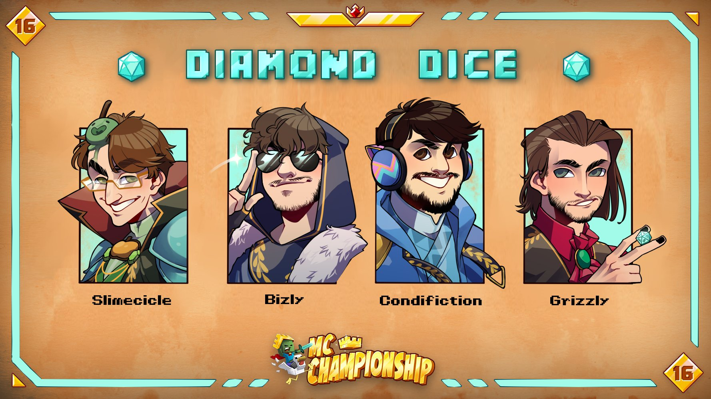
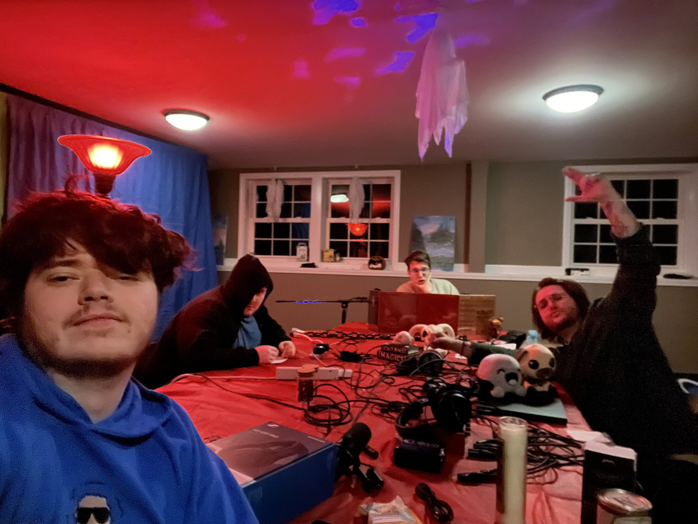

Behind the Campaign
JRWI is run by 4 Youtubers, Charlie slimecicle, Grizzly Plays, Bizzly, and Condifiction, all 4 of which have been content creators for years. Branching off of their own types of content, these 4 friends came together as what started as a joke and became a success. No one's really sure when JRWI offically started, seeing as how it didn't start with episode 1 of Riptide. The group had done a few one-shot campaigns in the past with a few other content creators, and made a small pre-campaign with characters featured in the Riptide campaign. Nevertheless, the creativity of these 4 individuals brought into one story has made of a D&D podcast that has rocked the genre. With the combonation of serious moments and the neverending commedy, this group and campaign sends you on a spiral.
The Minds behind the Madness
Charlie, Bizzly, Grizzly, and Condifiction have been friends and content collaborators for years, (I know from personally watching them) drifiting into eachothers circles from diferent genres of content. Most of the conent I know of is from Charlie- who on multple channels has done multiple colaborations with the the other three creators, both solo and together. All 4 members have solo content that features eachother with Slimecicles being the wildiest. From D&D- like minecraft roleplay(?) to spending the night in the most haunted place in Virginia these boys have done quite a lot together. Charlie focuses mainly on misc gaming and minecraft content. Grizzly focuses on a lot of gaming and anime content. Bizzly has started to shift his content toward video essays, comentary and ranking things. And Condifiction focuses on misc gaming and comentary content. All 4 seem so different in so many ways, both in who they are and what they make, but brought together in this campaign and much of their other conent, they are the most compatible, and funniest people you'll see.
